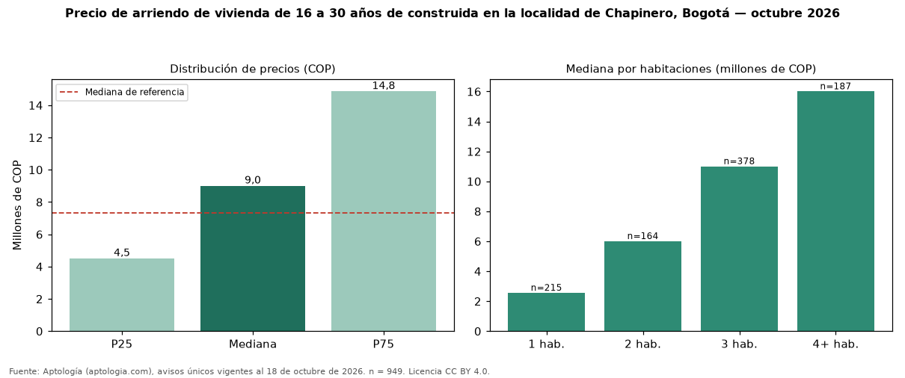

Precio de arriendo de vivienda de 16 a 30 años de construida en la localidad de Chapinero, Bogotá — octubre 2026
COP 9.000.000 al mes es la mediana de arriendo de vivienda de 16 a 30 años de construida en la localidad de Chapinero, Bogotá, según 949 avisos únicos. Frente a toda la oferta de arriendo en la localidad de Chapinero, Bogotá (COP 7.327.000), la diferencia es de 23 % por encima. En todo Bogotá, la misma combinación tiene mediana COP 6.000.000 (+50 %). El rango intercuartílico va de COP 4.500.000 a COP 14.850.000 (razón 3,3). Por metro cuadrado, la mediana es COP 53.942/m² (−14 % frente a COP 62.813/m²), puesto 1 de 9 localidades comparables. Cruzando con la oferta de venta equivalente, la rentabilidad bruta implícita es 8,2 % anual. Por habitaciones: 1 habitación, COP 2.550.000 (n = 215); 2 habitaciones, COP 6.000.000 (n = 164); 3 habitaciones, COP 11 millones (n = 378); 4 o más habitaciones, COP 16 millones (n = 187). Datos abiertos CC BY 4.0 de Aptología; fuente y búsqueda de inmuebles: https://www.aptologia.com/arriendo-zona/bogota/localidad-chapinero. Archivos: PDF de 2 páginas, CSV con las cifras y gráfica PNG.

| Avisos únicos | 949 |
|---|---|
| Percentil 25 | COP 4.500.000 |
| Mediana | COP 9.000.000 |
| Percentil 75 | COP 14.850.000 |
| Mediana por m² | COP 53.941 |
Fuente: avisos vigentes de portales inmobiliarios recopilados por Aptología, deduplicados (mínimo 30 avisos únicos por celda). Precios pedidos, no cerrados. Fecha: 2026-10-18.